Get Free NCERT Solutions for Class 11 Maths Chapter 10 Straight Lines Miscellaneous Questions. Class 11 Maths NCERT Solutions are extremely helpful while doing homework. Class 11 Maths Extra Questions and NCERT Solutions were prepared by Experienced LearnCBSE.in Teachers. Detailed answers of all the questions in Chapter 10 Maths Straight Lines Class 11 Extra Questions Provided in NCERT Textbook.
- Straight Lines Class 11 Ex 10.1
- Straight Lines Class 11 Ex 10.2
- Straight Lines Class 11 Ex 10.3
- Straight Lines Class 11 Miscellaneous Exercise
- सरल रेखाएँ प्रश्नावली 10.1 का हल हिंदी में
- सरल रेखाएँ प्रश्नावली 10.2 का हल हिंदी में
- सरल रेखाएँ प्रश्नावली 10.3 का हल हिंदी में
- सरल रेखाएँ विविध प्रश्नावली का हल हिंदी में
- Straight Lines Class 11 Notes
- Straight Lines NCERT Exemplar Class 11 Solutions
- RD Sharma Class 11 Solutions Straight Lines
- JEE Main Mathematics Straight Lines Previous Year Questions
You can also save the NCERT Solutions Class 11 Maths Straight Lines images and take the print out to keep it handy for your exam preparation.
Topics and Sub Topics in Class 11 Maths Chapter 10 Straight Lines:
| Section Name | Topic Name |
| 10 | Straight Lines |
| 10.1 | Introduction |
| 10.2 | Slope of Line |
| 10.3 | Various Forms of the Equation of Line |
| 10.4 | General Equation of Line |
| 10.5 | Distance of a Point From a Line |
NCERT Solutions for Class 11 Maths Chapter 10 Straight Lines Miscellaneous Exercise
NCERT Solutions for Class 11 Maths Chapter 10 Straight Lines Miscellaneous Questions are part of NCERT Solutions for Class 11 Maths. Here we have given Class 11 Maths NCERT Solutions Straight Lines Ch 10 Miscellaneous Questions with Solutions.
Miscellaneous Exercise Class 11 Maths Question-1

Ans.


Miscellaneous Exercise Class 11 Maths Question-2
Ans.
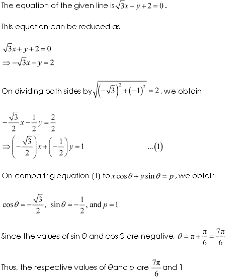
Miscellaneous Exercise Class 11 Maths Question-3
Ans.

Miscellaneous Exercise Class 11 Maths Question-4
Ans.
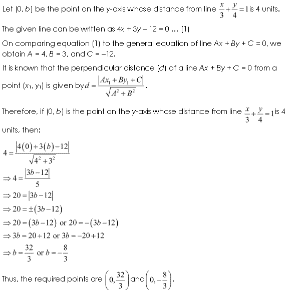
Miscellaneous Exercise Class 11 Maths Question-5

Ans.


Miscellaneous Exercise Class 11 Maths Question-6

Ans.

Miscellaneous Exercise Class 11 Maths Question-7
Ans.
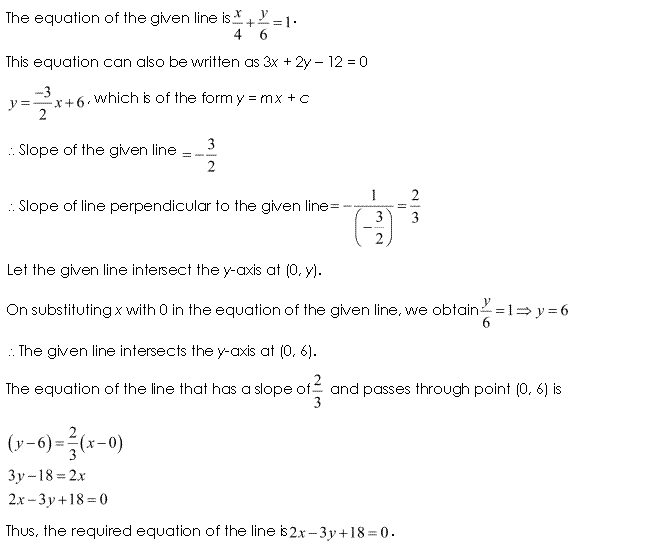
Miscellaneous Exercise Class 11 Maths Question-8

Ans.
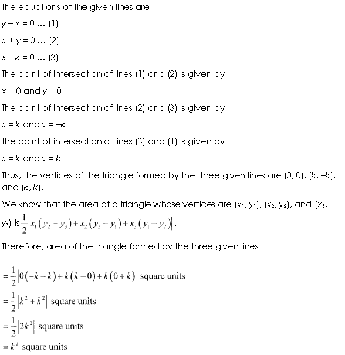
Miscellaneous Exercise Class 11 Maths Question-9
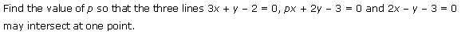
Ans.

Miscellaneous Exercise Class 11 Maths Question-10

Ans.


Miscellaneous Exercise Class 11 Maths Question-11
Ans.
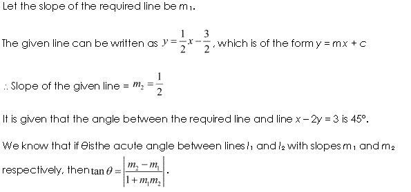

Miscellaneous Exercise Class 11 Maths Question-12
Ans.

Miscellaneous Exercise Class 11 Maths Question-13

Ans.
Miscellaneous Exercise Class 11 Maths Question-14

Ans.
Miscellaneous Exercise Class 11 Maths Question-15
Ans.
Miscellaneous Exercise Class 11 Maths Question-16

Ans.
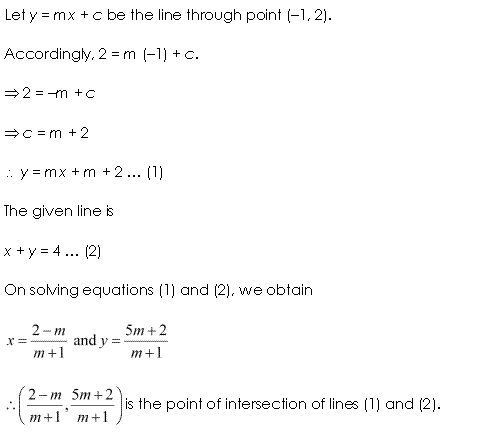

Miscellaneous Exercise Class 11 Maths Question-17

Ans.
Miscellaneous Exercise Class 11 Maths Question-18

Ans.

Miscellaneous Exercise Class 11 Maths Question-19
Ans.
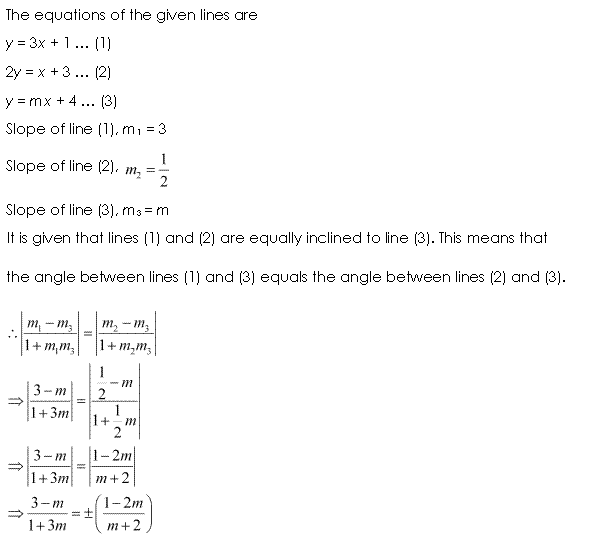
Miscellaneous Exercise Class 11 Maths Question-20

Ans.
Miscellaneous Exercise Class 11 Maths Question-21
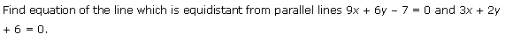
Ans.
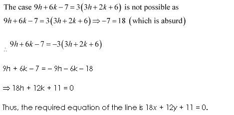
Miscellaneous Exercise Class 11 Maths Question-22

Ans.
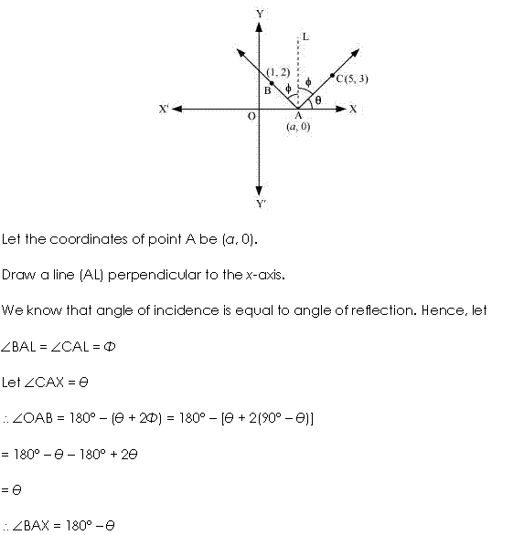

Miscellaneous Exercise Class 11 Maths Question-23
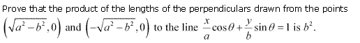
Ans.


Miscellaneous Exercise Class 11 Maths Question-24

Ans.

NCERT Solutions for Class 11 Maths Chapter 10 Straight Lines (सरल रेखाएँ) Hindi Medium Miscellaneous Exercise


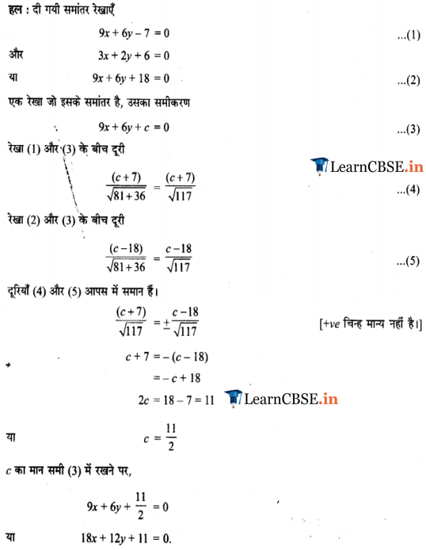

We hope the NCERT Solutions for Class 11 Maths Chapter 10 Straight Lines Miscellaneous Questions, help you. If you have any query regarding NCERT Solutions for Class 11 Maths Chapter 10 Straight Lines Miscellaneous Questions, drop a comment below and we will get back to you at the earliest.